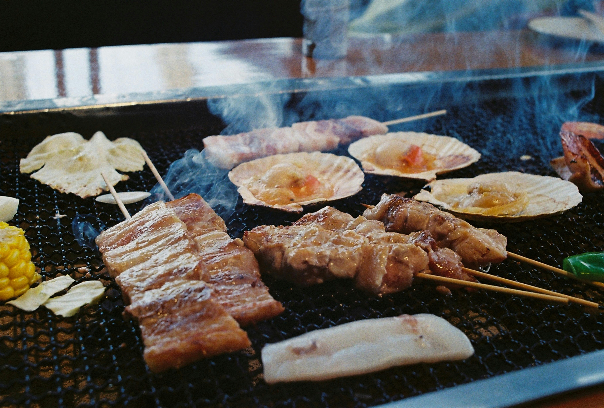
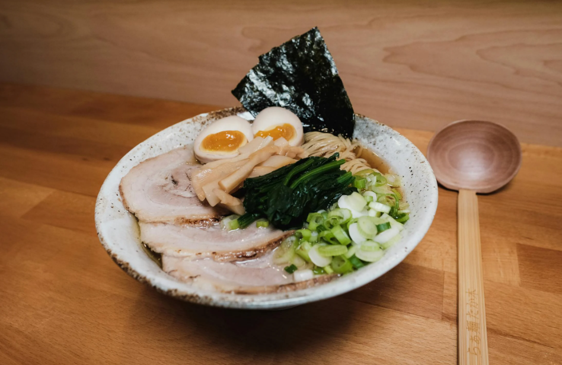
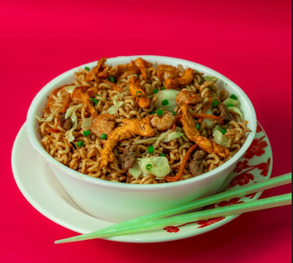
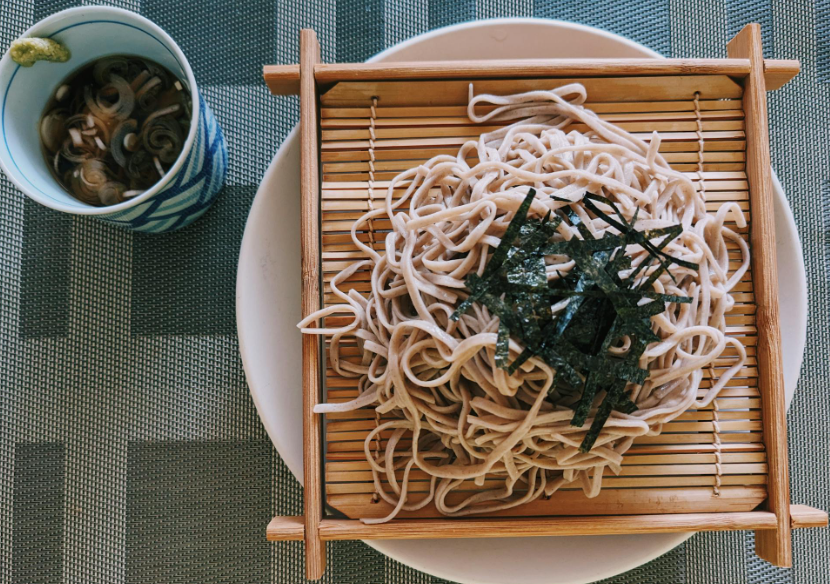
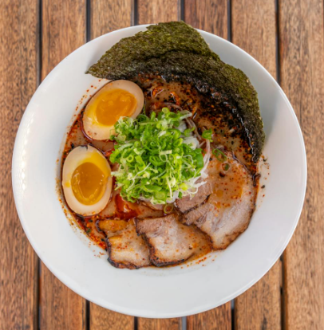

Yakiniku 焼肉

Slice beef thin. Marinate with soy sauce, sugar, garlic, ginger
and sesame oil. Grill or sear quickly in a hot pan. Serve with rice,
stir-fried vegetables, and sesame seeds on top.
Shio Ramen 塩ラーメン

Boil ramen noodles. Make broth with salt, chicken stock, garlic, ginger,
and scallions. Add soft-boiled egg. Serve noodles in broth with sliced pork,
nori seaweed, scallions, and toppings of your choice.
Takoyaki たこ焼き
Mix flour, egg, and dashi. Pour into special pan, add octopus, scallions,
and pickled ginger. Flip to form balls. Top with takoyaki sauce, mayo,
seaweed flakes (aonori), and bonito flakes (katsuobushi).
Gyoza 餃子

Mix ground meat, cabbage, garlic, ginger, and scallions. Fill wrappers,
fold and seal. Pan-fry, then steam with a splash of water. Serve with
soy sauce and vinegar dipping sauce.
Bento Box 弁当（べんとう）

Cook rice, protein (meat or fish), and veggies. Pack into a divided box
with pickles, egg, or fruit. Arrange with color and variety for a balanced,
tasty meal on the go.
Udon うどん

Boil thick udon noodles. Prepare broth with dashi, soy sauce, and mirin.
Add toppings like scallions, soft egg, tempura, or fried tofu. Serve hot
in a deep bowl with the broth.
Yakisoba 焼きそば

Stir-fry noodles with cabbage, carrots, onion, and pork or chicken.
Add yakisoba sauce (soy, Worcestershire, sugar). Cook until slightly
browned. Garnish with mayo, aonori seaweed, pickled ginger, and bonito flakes.
Soba 蕎麦

Cook soba noodles, rinse in cold water. Serve with dipping sauce (tsuyu
made of soy sauce, dashi, mirin). Add toppings like scallions, wasabi,
or seaweed. Enjoy chilled or in warm broth.
Tsukemen つけ麺

Boil thick noodles, rinse and chill. Prepare a rich dipping broth with soy,
mirin, dashi, garlic. Serve noodles separately to dip. Add toppings like egg,
pork slices, or nori sheets.
Somen 素麺
Boil thin somen noodles, rinse in ice water. Serve cold with dipping sauce (tsuyu).
Garnish with grated ginger, scallions, or seaweed. Light and refreshing—perfect for
hot summer days.